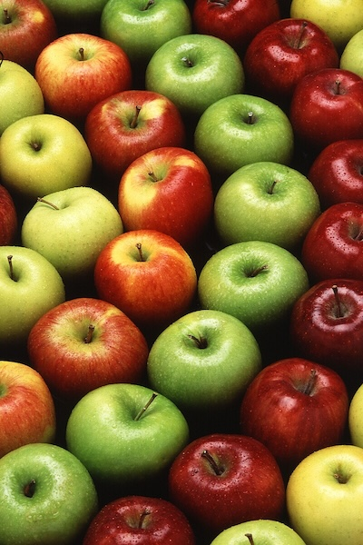

La pomme : qu'est-ce que c'est ?
La pomme est un fruit comestible produit par un pommier. Les pommiers sont cultivés à travers le monde et représentent l'espèce la plus cultivée du genre Malus. L'arbre est originaire d'Asie centrale, où son ancêtre sauvage, le Malus sieversii peut encore être trouvé de nos jours. Les pommes sont cultivées depuis des milliers d'années en Asie et en Europe et ont été importées en Amérique du Nord par les colons européens. Les pommes ont une signification religieuse et mythologique dans de nombreuses cultures, notamment les mythologies nordique et grecque ou la tradition chrétienne d'Europe.
L'histoire de la pomme
La pomme que nous consommons aujourd'hui est une descendante de l'espèce Malus sieversii consommée par l'homme depuis le Néolithique sur les plateaux d'Asie centrale, dans la région des montagnes du Tian Shan (la région d'Almaty au Kazakhstan en revendique l'origine). Il y a 3 000 ans, elle était déjà consommée par les Chinois. Elle arriva par la route de la soie chez les Arabes, les Grecs et les Romains. Pline l'Ancien en répertoriera plus tard environ cent variétés. Aujourd'hui, il existerait plus de 20 000 variétés (voir Liste des variétés de pommes), dont 7 000 sont cultivées à travers le monde.
La pomme est le fruit préféré des Français. Ils en consomment 16,6 kg par an et par ménage en moyenne sous toutes leurs formes ! Environ 50% des pommes produites en France sont destinées au marché français, 31% dont destinées à l'exportation, le reste va à la transformation.

Les principales variétés de pommes
[Source : Wikipédia (https://fr.wikipedia.org/wiki/Pomme) ]
La fête de la pomme
La fête de la pomme (en azéri: Alma bayramı) est un festival culturel célébré chaque année à Gouba, en Azerbaïdjan, le jour de la récolte des pommes.
En Azerbaïdjan, cet événement a été organisé pour la première fois en 2012. Le festival propose une cuisine de fruits azerbaïdjanaise, principalement des pommes de Gouba. Bien que la fête s'appelle "Fête de la pomme", elle est dédiée non seulement aux pommes, mais aux autres cultures fruitières.
Les jours de fête, dans la ville de Gouba - le centre horticole de l’Azerbaïdjan, des expositions sont organisées dans le cadre desquelles les jardiniers présentent différentes variétés de pommes et leurs produits.
[Source : Wikipédia (https://fr.wikipedia.org/wiki/F%C3%AAte_de_la_pomme_(Gouba)) ]